Research Assistant | Military Institute of Science and Technology (MIST)2026 – present
Developing a privacy-preserving, handheld fingerprint-based automated attendance system for MIST and higher education institutions in Bangladesh.
I'm an M.Sc. student in Electrical and Electronic Engineering at Bangladesh University of Engineering and Technology (BUET), advised by Dr. Shaikh Anowarul Fattah, and a Research Assistant at MIST, where I'm developing a privacy-preserving, fingerprint-based attendance system for universities in Bangladesh.
I did my B.Sc. in EEE at the Military Institute of Science and Technology (MIST) with Dr. Kazi Newaj Faisal, graduating 2nd of 97. My research builds sharper time–frequency representations of non-stationary signals and compact neural networks that learn from them, for biomedical and wearable sensing. I co-founded INSIA Lab.
I'm looking for Ph.D. positions in signal processing and AI. If you think we'd be a good fit, feel free to email me.
15 papers: 7 journal articles and 8 IEEE conference papers. Representative papers are highlighted; * denotes equal contribution. Hover a thumbnail to see a second figure from the paper.
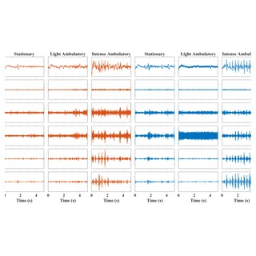

TL;DR: Tells epileptic and healthy subjects apart during everyday activities, using MODWT multiresolution features from a single wearable EEG channel.
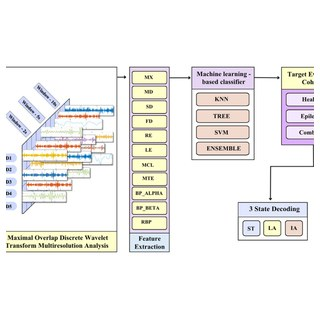

TL;DR: Recognises activities of daily living in both healthy and epileptic cohorts from one wearable EEG channel, with MODWT-MRA features and lightweight classifiers.
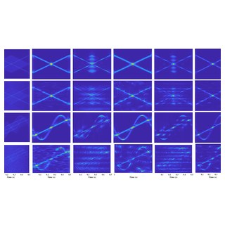
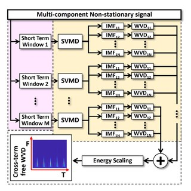
TL;DR: A short-term, SVMD-based time–frequency representation that gives sharper views of ECG signals.
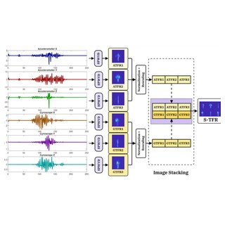
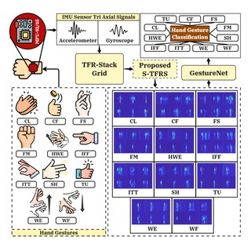
TL;DR: Stacks multivariate time–frequency maps from IMU and MMG sensors so a deep network can recognise hand gestures.
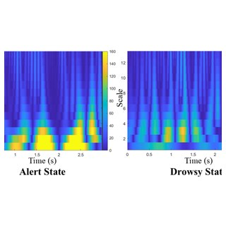
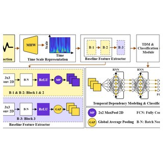
TL;DR: A sequence model that detects driver drowsiness in unseen subjects from a single EEG channel.
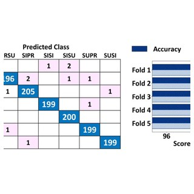
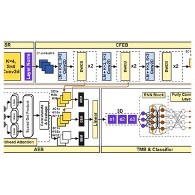
TL;DR: A lightweight hierarchical temporal network with depthwise convolutions that detects sleep posture transitions from radar.
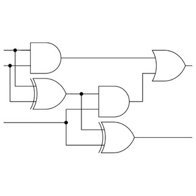

TL;DR: Compares transmission-gate and NMOS pass-transistor logic styles for an efficient 8-bit, 12-function ALU in 90 nm CMOS.

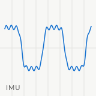
TL;DR: An application that tracks fatigue and exercise form during resistance workouts using phase-graded IMU analysis.

TL;DR: A deployment-oriented framework for analysing extreme vocal distortion techniques used in heavy metal singing.
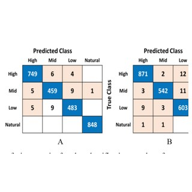

TL;DR: Gamma-band EEG features with resource-efficient machine learning classify multiple levels of cognitive load.
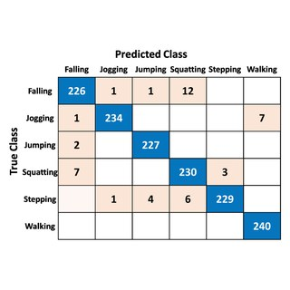
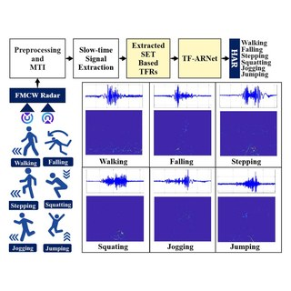
TL;DR: Synchroextracting-transform time–frequency maps and a custom anisotropic CNN improve human activity recognition with FMCW radar.
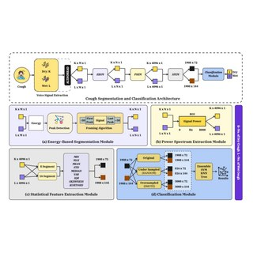
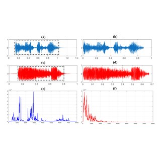
TL;DR: Power-spectrum features and lightweight machine learning classify coughs for respiratory disease monitoring.
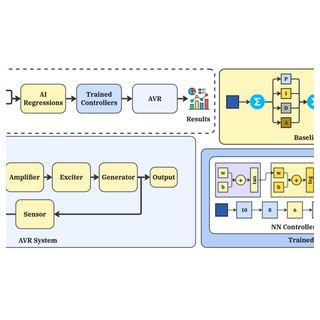

TL;DR: Compares neural-network-enhanced PID control of automatic voltage regulators with classical and regression-based tuning.
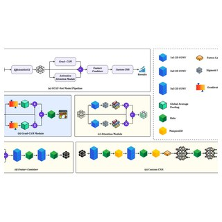
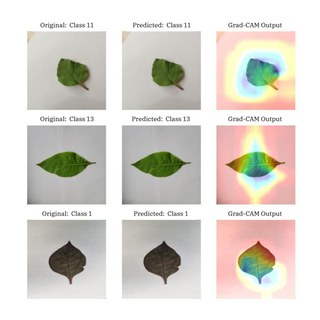
TL;DR: An attention-enhanced CNN with Grad-CAM explanations that classifies rare and endangered medicinal plants of Bangladesh.
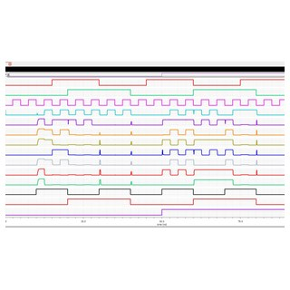
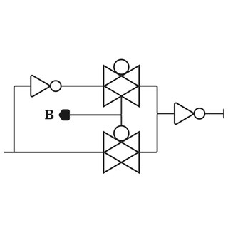
TL;DR: A high-speed, low-power 8-bit, 12-function ALU built with transmission-gate logic in 90 nm technology.